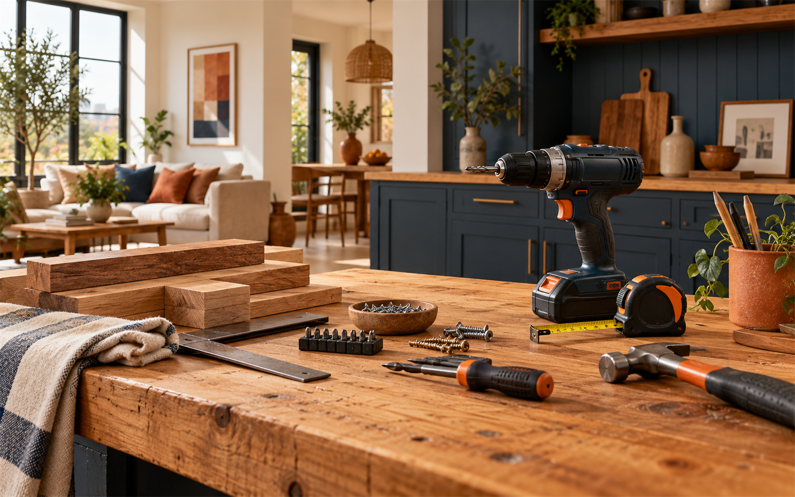

Montáže kuchyní
Konkrétní rozsah a termín vždy domluvíme podle zadání.

Montáže kuchyní, dveří a podlah, domácí opravy i renovace v České Lípě.
Konkrétní rozsah a termín vždy domluvíme podle zadání.
Konkrétní rozsah a termín vždy domluvíme podle zadání.
Konkrétní rozsah a termín vždy domluvíme podle zadání.
Konkrétní rozsah a termín vždy domluvíme podle zadání.
Montáže kuchyní, dveří a podlah, domácí opravy i renovace v České Lípě. Nejdříve si upřesníme situaci, rozsah práce a vhodný termín. Díky tomu dostanete postup, který odpovídá vašemu konkrétnímu zadání.
Veřejné recenze a katalog uvádějí montáže, opravy a renovace.
Uvedené služby a kontakty vycházejí z veřejně dostupných firemních profilů. Fotografie je ilustrační oborový vizuál.
Zavolejte nebo napište. Podle typu práce a lokality se domluví další krok.
Stačí stručně popsat situaci, místo realizace a přibližný rozsah. Pokud máte fotografie, můžete je zmínit při prvním kontaktu.
Použijte telefon nebo e-mail uvedený níže. Přesný rozsah se potvrdí individuálně.
Kunratická 2863, 470 01 Česká Lípa
Česká Lípa